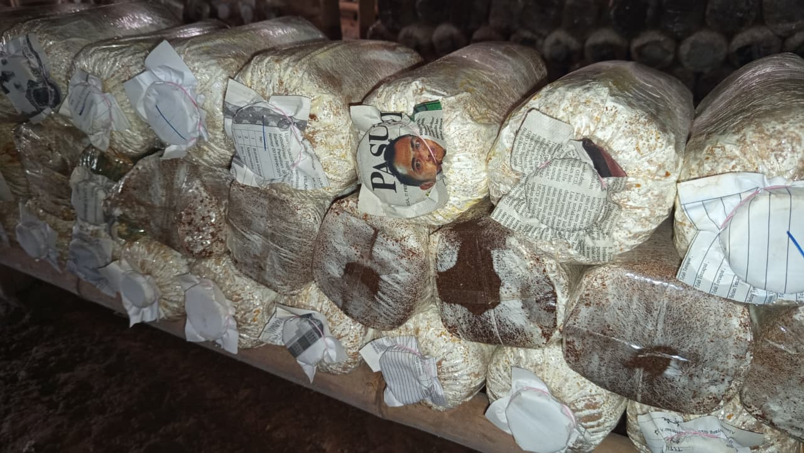
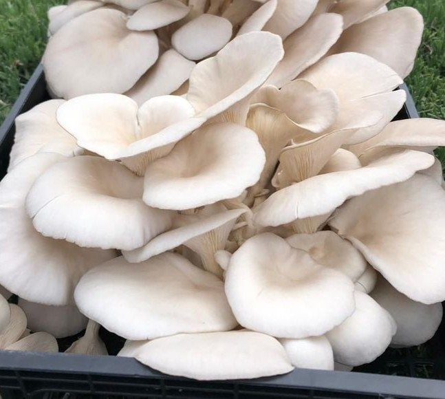
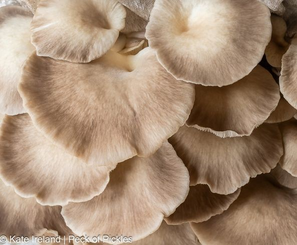
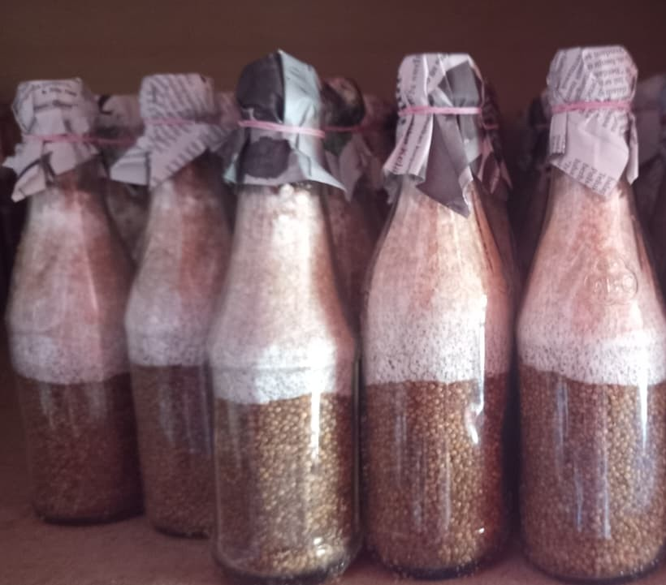
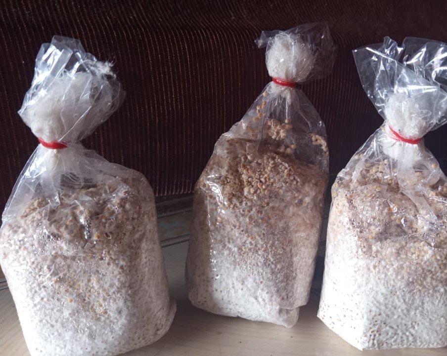
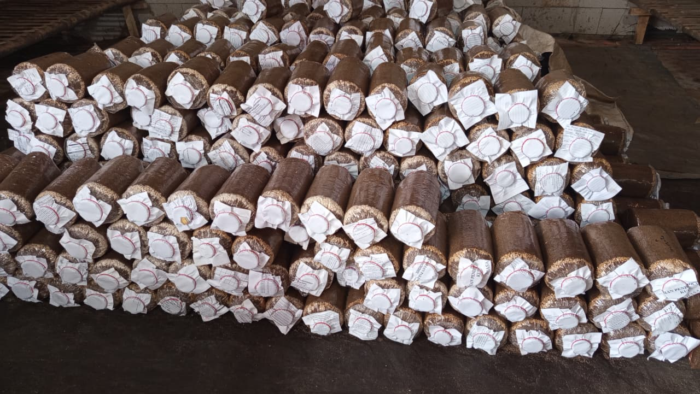

Dari jamur segar berkualitas tinggi hingga bibit unggul dan starter kit lengkap. Semua kebutuhan budidaya jamur tiram Anda tersedia di sini.




turunan dari F1 menggunakan media seperti biji-bijian atau serbuk gergaji.

media tanam yang dibungkus berisi campuran serbuk gergaji kayu, dedak/bekatul, kapur, dan air.
Komitmen kami pada kualitas dan kepuasan pelanggan menjadikan produk HDSF Mushroom pilihan terbaik untuk budidaya jamur tiram.
Semua produk melalui kontrol kualitas ketat standar internasional.
Pengiriman same-day untuk area Jawa Barat.
Tim customer service siap membantu Anda kapan saja via WhatsApp.
Harga terbaik di kelasnya dengan kualitas premium yang konsisten.
Pertanyaan yang sering diajukan tentang produk jamur tiram kami.
Tim ahli kami siap membantu Anda memilih produk yang tepat sesuai kebutuhan budidaya atau konsumsi Anda. Konsultasi gratis untuk semua pelanggan.